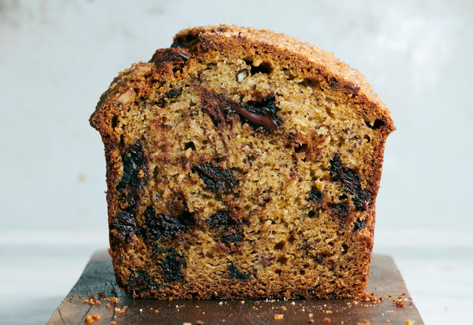

Asher's Banana Bread

Description
This is a recipe for a chocolate chip banana bread that I got from my good friend Asher. It's delicious and fairly simple and easy to make as far
as baking recipes go. Using very ripe bananas is the key to making this recipe pop. If you're working with bananas that aren't quite to
the "so ripe they're brown" stage, you can pop them in the oven for around 30 to 40 minutes at 300°F and let cool.
Ingredients
- 3 ripe bananas, mashed
- 1/2 c. vegetable oil
- 1 c. granulated sugar
- 2 eggs
- 4 1/2 tsp. lemon juice (juice of 1/2 lemon)
- 2 c. flour
- 1/2 tsp. baking powder
- 1 tsp. baking soda
- 1/2 tsp. salt
- 1 1/2 c. chocolate chips
- 1/2 tsp. cinnamon
- 1/2 tsp. vanilla extract
Steps
- Preheat oven to 350 degrees. If your oven has a convection feature, use that.
- Line the bottoms of either two 7.5" x 3.5" loaf pans or one 5.25" x 9.25" loaf pan with waxed paper and spray with oil.
- In a large mixing bowl, combine mashed bananas, oil, sugar, lemon juice, eggs, and vanilla extract.
- In a separate medium or large mixing bowl, combine the flour, cinnamon, baking soda, baking powder, and salt.
- Gradually add the dry ingredients to the wet ingredients, stirring constantly.
- Continue stirring until the batter is fully combined.
- Stir the chocolate chips into the batter.
- Pour the batter evenly into the loaf pan(s) prepared in step 2.
- Bake at 350 degrees for 30-40 minutes for the small loaf pans or an hour for the large loaf pan. Check with a toothpick; it should
come out free of crumbs or batter. Bake longer if it doesn't.